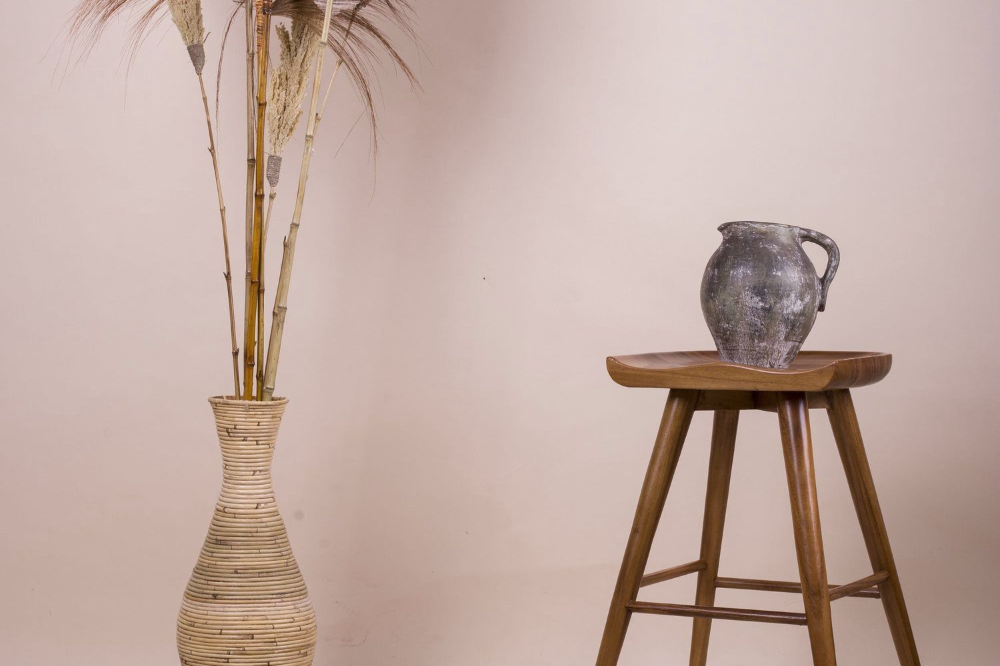

Journal
Rust in huis in vijf stappen
Minder spullen, meer ruimte: zo creëer je een interieur dat tot rust brengt.
- Begin met opruimen: laat per ruimte alleen staan wat je echt gebruikt of mooi vindt.
- Kies een palet van drie tot vier zachte tinten, zoals crème, zand en taupe, en houd die overal aan.
- Werk met natuurlijke materialen: linnen, hout, keramiek en steen geven warmte zonder drukte.
- Zorg voor zacht licht op meerdere hoogtes: een tafellamp, een kaars en een hanglamp in plaats van één felle plafondlamp.
- Groepeer decoratie in oneven aantallen, bijvoorbeeld een vaas, een schaal en een kaars bij elkaar.